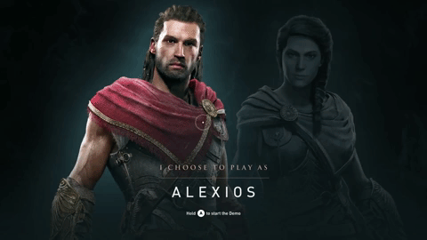
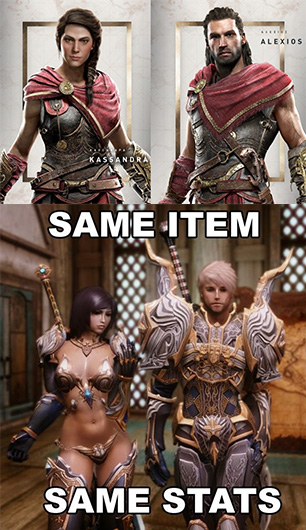

Kassandra (Assassin's Creed 2018)
Ubisoft
Assassin’s Creed Odyssey, dernier jeu en date de la licence à succès Assassin’s Creed, s’est démarqué de ses prédécesseurs de manière assez élégante. Ce jeu est le premier de la série (hors spin-off qui proposait alors Aveline comme première femme jouable dans la série des Assassin’s Creed) à proposer au joueur d’incarner une femme, égale en tout point à un personnage masculin.

C’est donc cette année, qu’Ubisoft laisse, avec Assassin’s Creed Odyssey, le choix à ses joueurs entre un personnage masculin, Alexios, ou féminin, Kassandra, tous deux disposant de capacités égales dans le jeu.
L’éditeur semble désormais décider à mettre en avant la diversité dans son nouveau jeu et confirme que, dans cet opus, le personnage incarné par le joueur ne sera pas limité à des relations hétérosexuelles. Kassandra et Alexios pourront donc être homosexuel, bisexuel ou même asexuel. C’est une révolution pour cette franchise maintenant âgée de 11ans.
 En ce qui concerne le design de Kassandra, elle est féminine, mais pas sexualisé. Son plastron est fonctionnel, et les deux personnages ont le même style de combat. Une très grande avancée positive qui nous éloigne petit à petit des représentations de RPG (Rôle-Play Game) où les items de combats sont hypersexualisés pour les personnages féminins.
Pour conclure sur ce jeu, on peut dire que la représentation de la femme a grandement évolué, tant au niveau physique qu’au niveau du caractère. Cette avancée est lente mais sûre, cependant il reste à questionner la visibilité des femmes dans les jeux vidéo. En effet pour l’exemple de Kassandra, même si elle possède un rôle au même niveau que son homologue masculin, elle reste cependant dans son ombre et n’obtient que très peu de visibilité dans les médias (publicités, bandes annonces, trailers…) diffusé par les éditeurs.